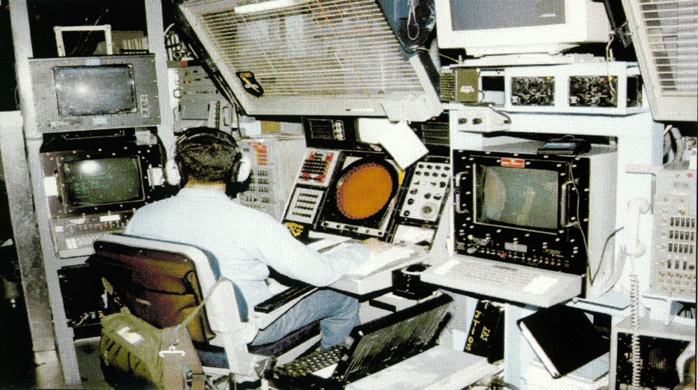
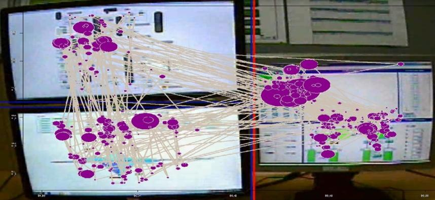
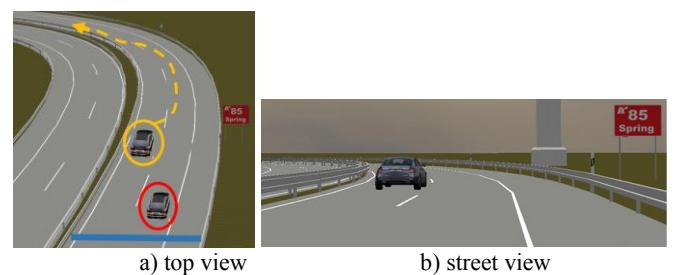
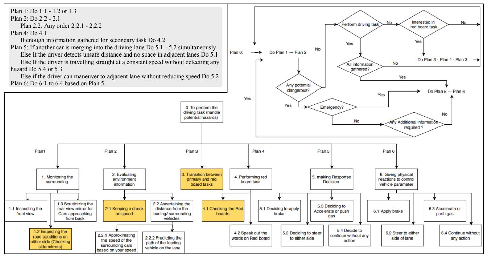
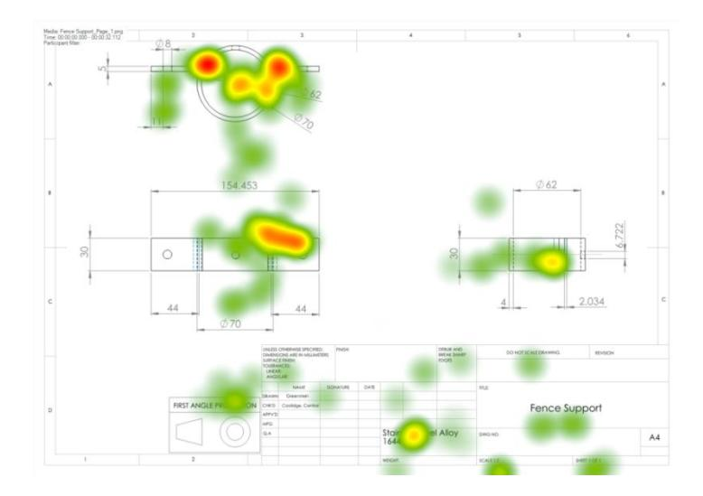
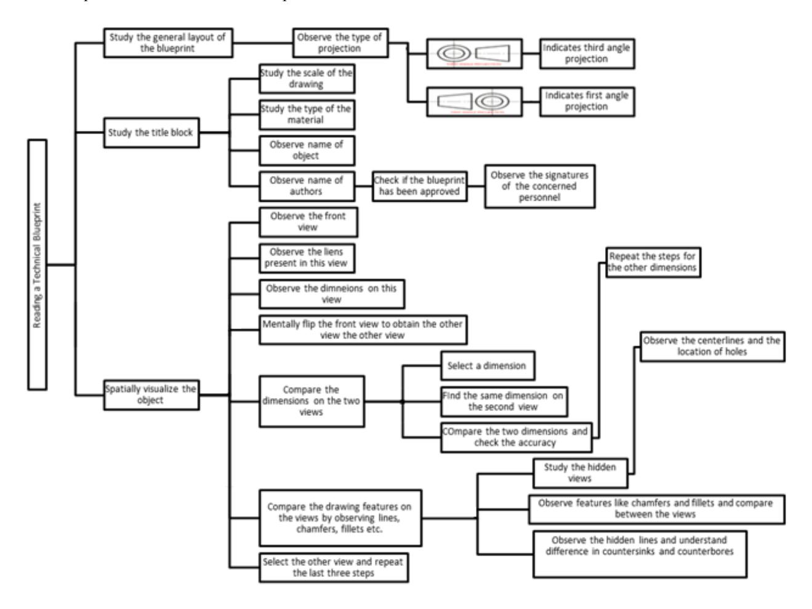
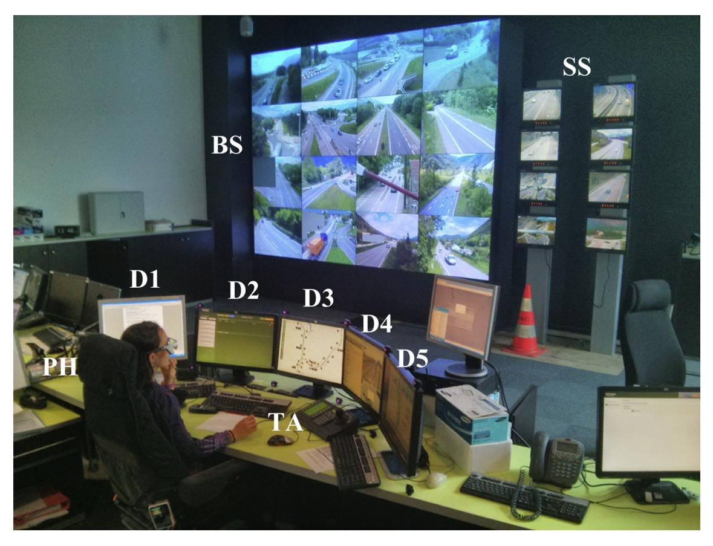
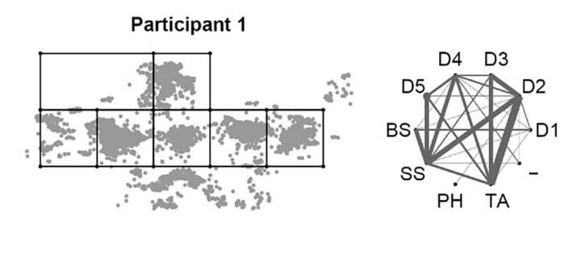
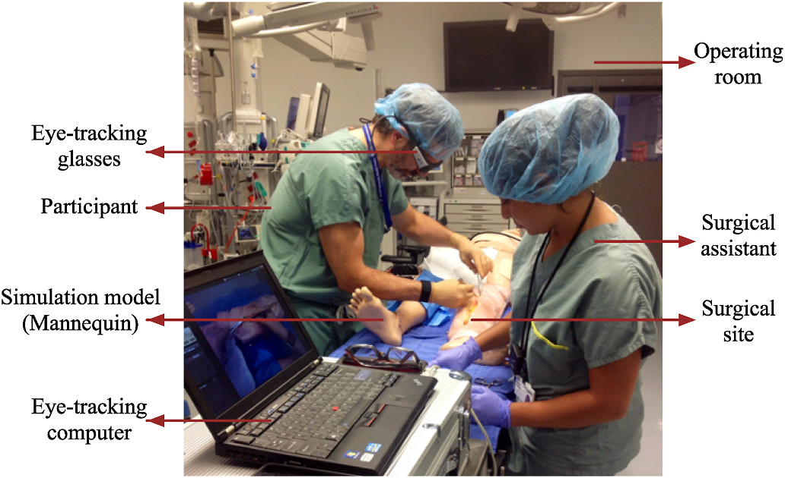
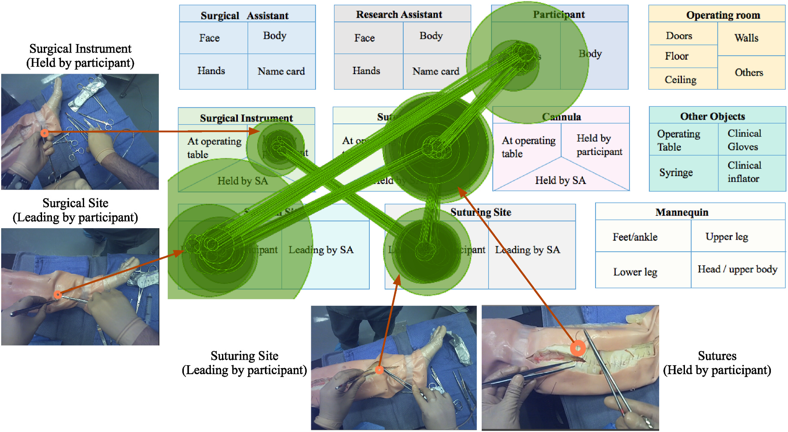

Lesson 0: Introduction and Case Studies
HCI Workshop
Lesson Roadmap
- Section 0.1: Introduction: workshop purpose, related fields, research venues, reference sources, and core concepts
- Section 0.2: Case Studies: applied examples from air defense, process control, driving, CNC machining, blueprint reading, traffic management, and surgical training
Section 0.1: Introduction
- Purpose and workshop frame
- HCI, human factors, and modeling fields
- Research venues and reference sources
- Concepts used across later lessons
Conceptual Outcomes
- Human interaction principles: how perception, attention, memory, action, and workload shape technology use.
- HCI as an engineering discipline: how interfaces can be analyzed, measured, and improved.
- Task models: how human goals, actions, decisions, and errors can be represented systematically.
- Visual attention: how gaze behavior reveals what users notice, ignore, revisit, or misunderstand.
- Cognitive load: how task demands can exceed available mental resources.
- Human-AI interaction: how automation and AI agents change roles, trust, attention, and decision-making.
Applied Outcomes
- Decompose tasks: break complex human activity into goals, subtasks, actions, and decision points.
- Build interaction models: use methods such as HTA, KLM, and GOMS to represent human performance.
- Collect evidence: gather behavioral, gaze, physiological, and qualitative data from users.
- Analyze interface demands: identify where an interface creates attention, memory, or workload problems.
- Validate models: compare predicted behavior with observed user performance.
- Redesign interfaces: use evidence to improve usability, efficiency, safety, and operator experience.
Dix, Finlay, Abowd, & Beale, Human–Computer Interaction, 3rd ed., 2004; Helander, Landauer, & Prabhu, Handbook of Human-Computer Interaction, 1997; John & Kieras, “The GOMS Family of Analysis Techniques,” 1994.
Related Fields of Research
- Human-Computer Interaction: studies how people use and experience interactive systems.
- Human-centered design: starts design from user goals, needs, and limitations.
- HMI: focuses on human operation of machines, equipment, and control systems.
- UX and usability: evaluate whether interfaces are useful, learnable, and efficient.
- Cognitive architectures: computational models of perception, memory, and action.
- Human performance modeling: predicts time, errors, workload, and skill demands.
- Human factors: designs work systems around human capabilities and constraints.
- Computational psychology: uses formal models to explain human behavior.
Dix et al., Human–Computer Interaction, 2004; Helander et al., Handbook of Human-Computer Interaction, 1997; John & Kieras, 1994.
Research Is Located In
- ACM Computing Classification System: Human-centered computing; interaction design, visualization, intelligent interfaces, and CSCW..
- AMC Conference on Human Factors in Computing Sysmtes major venue for HCI research and interaction design.
- ScienceDirect journals: applied HCI appears in ergonomics, behavior, and design journals.
- Computers in Human Behavior: publishes studies of technology use and human behavior.
ACM Computing Classification System: https://dl.acm.org/ccs; ACM CHI Conference Proceedings: https://chi2024.acm.org/; Elsevier ScienceDirect: https://www.sciencedirect.com/; Computers in Human Behavior.
General References
- Dix et al.: broad HCI foundation for humans, computers, interaction, and design.
- Helander handbook: usability engineering and evaluation methods for HCI practice.
- Diaper and Stanton: task-analysis reference for decomposing human work.
- John and Kieras: GOMS models for predicting skilled interaction performance.
- David Kieras, Univ. of Michigan: practical resources for GOMS, KLM, and cognitive modeling.
Dix et al., Human–Computer Interaction, 2004; Helander et al., Handbook of Human-Computer Interaction, 1997; Diaper & Stanton, The Handbook of Task Analysis for Human-Computer Interaction, 2004; John & Kieras, “The GOMS Family of Analysis Techniques,” 1994.
HCI Academic Curricula
- Stanford CS147: project-based HCI course centered on design and prototyping.
- Georgia Tech CS 6750: HCI course emphasizing principles, methods, and evaluation.
- Michigan Tech CS4760: usability-focused HCI course with design and testing practice.
Stanford HCI Course, Scott Klemmer: https://hci.stanford.edu/courses/cs147/2007/; Georgia Tech CS 6750: https://omscs.gatech.edu/cs-6750-human-computer-interaction; Michigan Tech CS4760, Robert Pastel: https://cs4760.csl.mtu.edu/2024/.
Concepts We Will Use
- Interface design process: move from user needs to prototypes and evaluation.
- Design heuristics: practical rules for spotting common usability problems.
- Task analysis: decompose goals, subtasks, decisions, and information needs.
- Cognitive architectures: model human perception, memory, learning, and action.
- Eye tracking: measure fixations, saccades, AOIs, scanpaths, and attention shifts.
- Mental models: explain how users think a system works and what actions make sense.
- Cognitive load: estimate the mental demand created by tasks and interfaces.
- Physiological measures: use biosignals as indirect evidence of workload or attention.
Dix et al., 2004; Diaper & Stanton, 2004; John & Kieras, 1994; Land & Tatler, Looking and Acting, 2009.
Section 0.2: Case Studies
- Safety-critical display systems
- Process and traffic control rooms
- Driving under divided attention
- Manufacturing interfaces and visual expertise
- Healthcare training and attention measures
Navy Air Defense System Modeling
- Domain: safety-critical ship systems with high operator responsibility.
- Human role: monitor complex displays and act under time pressure.
- HCI issue: workstation complexity creates perceptual and cognitive demand.
- Modeling idea: cognitive architectures predict task time and training demands.
- Figure focus: an AEGIS workstation as an operator-centered design problem.
Navy Air Defense System Modeling

Chipman & Kieras, “Operator Centered Design of Ship Systems,” 2004, Figure 1, p. 2.
Refinery Control Room HMI
- Domain: refinery control room with continuous process monitoring.
- Human role: detect process deviations and maintain situation awareness.
- HCI issue: workload changes as alarms, trends, and deviations increase.
- Measurement idea: scanpaths reveal how operators sample display information.
- Figure focus: sample scanpaths across a refinery control-room display.
Refinery Control Room HMI

Noah & Rothrock, “Using Eye Tracking for Live Measures of Workload in a Refinery Control Room Process Monitoring Task,” 2015, Figure 2, p. 3.
Driving Under Divided Attention
- Domain: simulated highway driving with a sudden swerving-vehicle hazard.
- Human role: maintain lane control while reading a roadside information board.
- HCI issue: divided visual attention can delay hazard perception and response.
- Measurement idea: combine eye tracking, HTA, and GOMS reaction-time modeling.
- Design use: identify cues for driver-assistance warnings and interface support.
Yang, Kim, & Nazareth, “Hierarchical Task Analysis for Driving under Divided Attention,” 2019.
Driving Under Divided Attention: Event

Yang, Kim, & Nazareth, “Hierarchical Task Analysis for Driving under Divided Attention,” 2019, Figure 1, p. 2.
Driving Under Divided Attention: HTA

Yang, Kim, & Nazareth, “Hierarchical Task Analysis for Driving under Divided Attention,” 2019, Figure 2, p. 3.
Driving Under Divided Attention: GOMS Operators
| Operator | Meaning | Mean (s) | SD (s) |
|---|---|---|---|
| Check speed panel | Time to inspect the vehicle speed display. | 0.33 | 0.26 |
| Check front view | Time checking the roadway ahead for vehicles or open space. | 1.26 | 1.02 |
| Check rear mirror | Time using the rear mirror to check the following vehicle. | 0.43 | 0.29 |
| Check side mirror | First side-mirror glance until gaze returns to the front view. | 0.31 | 0.14 |
| Check red boards | Time from starting to check the red board until reading is complete. | 0.70 | 0.48 |
| Plan area | Outcome | N | Mean (s) | SD (s) | F | p |
|---|---|---|---|---|---|---|
| Monitoring surrounding | Crash | 7 | 0.4290 | 0.2810 | 0.91 | 0.350 |
| Non-crash | 19 | 0.2895 | 0.3446 | |||
| Transition | Crash | 7 | 0.2286 | 0.1113 | 12.82 | 0.002 |
| Non-crash | 19 | 0.0842 | 0.0834 | |||
| Red board | Crash | 7 | 0.7857 | 0.0690 | 3.07 | 0.092 |
| Non-crash | 19 | 0.6158 | 0.2500 |
Yang, Kim, & Nazareth, “Hierarchical Task Analysis for Driving under Divided Attention,” 2019, Tables 1 and 3, p. 4.
CNC Interface Evaluation
- Domain: CNC machine control panels used in industrial manufacturing.
- Human role: operate machine functions through panel layout and controls.
- HCI issue: poor HMI design can increase burden and slow operation.
- Measurement idea: combine physiology, eye tracking, behavior, and ratings.
- Design use: compare interface schemes and identify elements to improve.
- Figure focus: four alternative CNC control-panel HMI schemes.
CNC Interface Evaluation

Dou, Zhang, Zhao, Pei, & Qin, “Human-Machine Interface Evaluation of CNC Machine Control Panel through Multidimensional Experimental Data Synchronous Testing Analysis Method,” 2017, Figure 2, p. 1198.
Visual Strategies for Reading Blueprints
- Domain: mechanical part drawings used in manufacturing and maintenance.
- Human role: interpret 2D drawings to understand part geometry and production.
- HCI issue: expert visual strategies are structured but often tacit.
- Method idea: eye tracking plus retrospective think-aloud explains strategy.
- Figure focus: gaze heatmaps translated into a hierarchical task analysis.
Visual Strategies for Reading Blueprints

Nambiar et al., “Understanding the Visualization Strategies used by Experts when Reading Mechanical Part Drawings using Eye Tracking,” 2013, Figure 4, p. 507.
Visual Strategies for Reading Blueprints

Nambiar et al., “Understanding the Visualization Strategies used by Experts when Reading Mechanical Part Drawings using Eye Tracking,” 2013, Figure 5, p. 509.
Evaluation of a Traffic Control Room
- Domain: live road traffic management control room.
- Human role: monitor multiple displays and respond to incidents.
- HCI issue: operators may use available visual information differently.
- Measurement idea: mobile eye tracking captures workflow in the field.
- Figure focus: the workstation layout and Participant 1’s visual sampling.
Evaluation of a Traffic Control Room

Starke, Baber, Cooke, & Howes, “Workflows and Individual Differences during Visually Guided Routine Tasks in a Road Traffic Management Control Room,” 2017, Figure 1, p. 81.
Evaluation of a Traffic Control Room

Starke, Baber, Cooke, & Howes, “Workflows and Individual Differences during Visually Guided Routine Tasks in a Road Traffic Management Control Room,” 2017, Figure 6, p. 86.
Visual Strategies of Surgeons
- Domain: simulated surgical training with expert and novice learners.
- Human role: perform procedural tasks while monitoring task-relevant areas.
- HCI issue: novice attention is often more diffuse than expert attention.
- Measurement idea: compare fixations, saccades, blinks, and gaze distribution.
- Figure focus: the simulation setup and novices’ most frequent scanpaths.
Visual Strategies of Surgeons

Li et al., “Using Eye Tracking to Examine Expert-Novice Differences during Simulated Surgical Training: A Case Study,” 2023, Figure 2, p. 4.
Visual Strategies of Surgeons

Li et al., “Using Eye Tracking to Examine Expert-Novice Differences during Simulated Surgical Training: A Case Study,” 2023, Figure 11, p. 10.